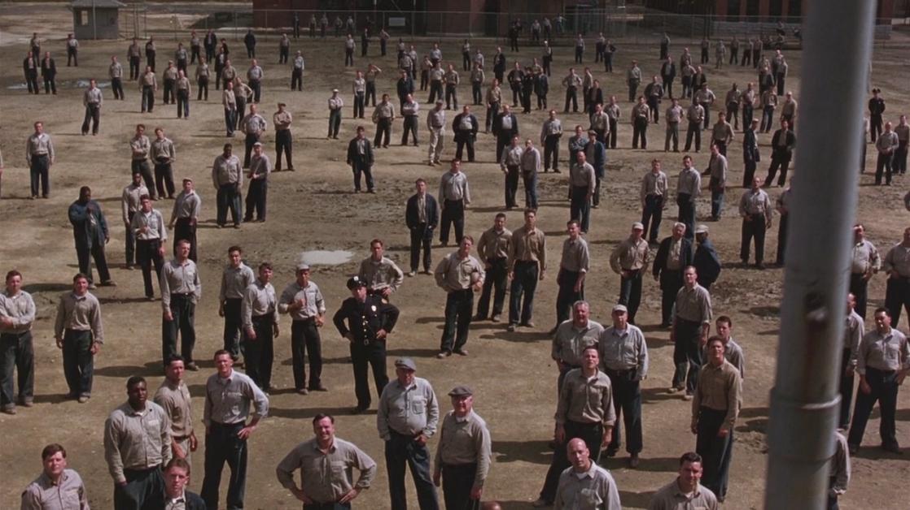
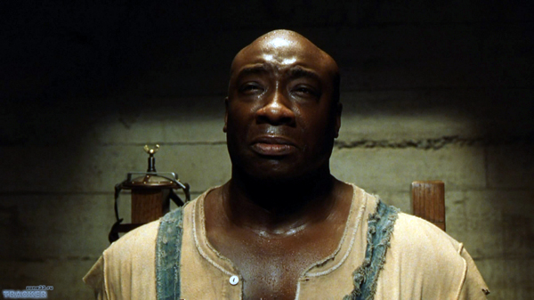
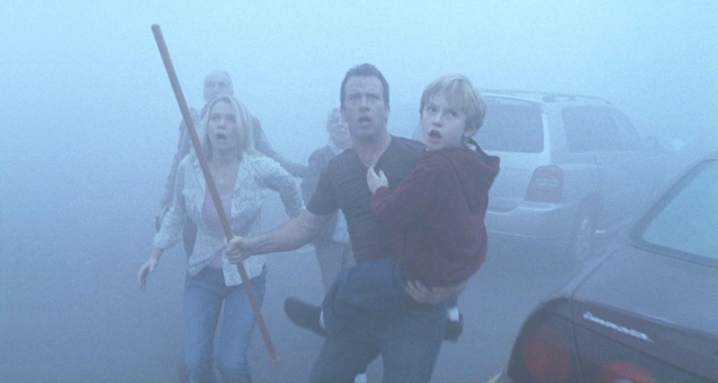

The Shawshank Redemption

The Shawshank Redemption is a 1994 American drama film written and directed by Frank Darabont, and starring Tim Robbins and Morgan Freeman. Adapted from the Stephen King novella Rita Hayworth and Shawshank Redemption, the film tells the story of Andy Dufresne, a banker who is sentenced to life in Shawshank State Penitentiary for the murder of his wife and her lover, despite his claims of innocence. During his time at the prison, he befriends a fellow inmate, Ellis Boyd "Red" Redding, and finds himself protected by the guards after the warden begins using him in his money-laundering operation. The film received multiple award nominations (including seven Oscar nominations) and highly positive reviews from critics for its acting, story, and realism. Through Ted Turner's acquisition of Castle Rock Entertainment, the film started gaining more popularity in 1997 after it started near-daily airings on Turner's TNT network. It is now considered to be one of the greatest films of the 1990s.
The Shawshank Redemption is a 1994 American drama film written and directed by Frank Darabont, and starring Tim Robbins and Morgan Freeman. Adapted from the Stephen King novella Rita Hayworth and Shawshank Redemption, the film tells the story of Andy Dufresne, a banker who is sentenced to life in Shawshank State Penitentiary for the murder of his wife and her lover, despite his claims of innocence. During his time at the prison, he befriends a fellow inmate, Ellis Boyd "Red" Redding, and finds himself protected by the guards after the warden begins using him in his money-laundering operation. The film received multiple award nominations (including seven Oscar nominations) and highly positive reviews from critics for its acting, story, and realism. Through Ted Turner's acquisition of Castle Rock Entertainment, the film started gaining more popularity in 1997 after it started near-daily airings on Turner's TNT network. It is now considered to be one of the greatest films of the 1990s.

The Green Mile is a 1999 American fantasy crime drama film written and directed by Frank Darabont and adapted from the 1996 Stephen King novel of the same name. The film is told in a flashback format and stars Tom Hanks as Paul Edgecomb and Michael Clarke Duncan as John Coffey with supporting roles by David Morse, Bonnie Hunt, and James Cromwell. The film also features Dabbs Greer, in his final film, as the old Paul Edgecomb. The film tells the story of Pauls life as a death row corrections officer during the Great Depression in the United States, and the supernatural events he witnessed. The film was nominated for four Academy Awards: Best Picture, Best Supporting Actor for Michael Clarke Duncan, Best Sound, and Best Adapted Screenplay.

The Mist (also known as Stephen King's The Mist) is a 2007 American science fiction horror film based on the 1980 novella of the same name by Stephen King. The film was written and directed by Frank Darabont, who had previously adapted King's works The Shawshank Redemption (1994 film based on King's 1982 novella) and The Green Mile (1999 film based on King's 1996 novel). Darabont had been interested in adapting The Mist for the big screen since the 1980s. The film features an ensemble cast including Thomas Jane, Marcia Gay Harden, Samuel Witwer, Toby Jones, and future The Walking Dead actors Jeffrey DeMunn, Juan Gabriel Pareja, Laurie Holden, and Melissa McBride.